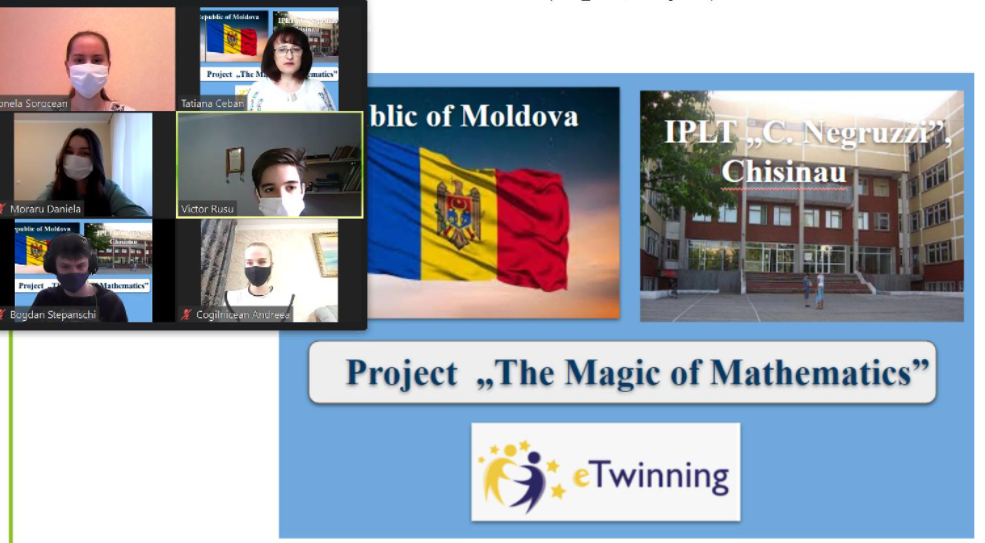
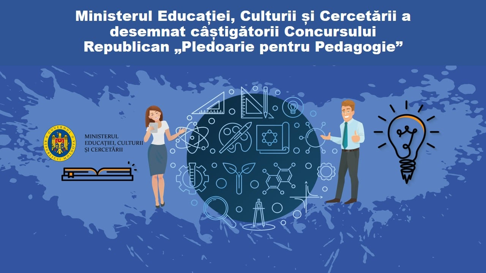
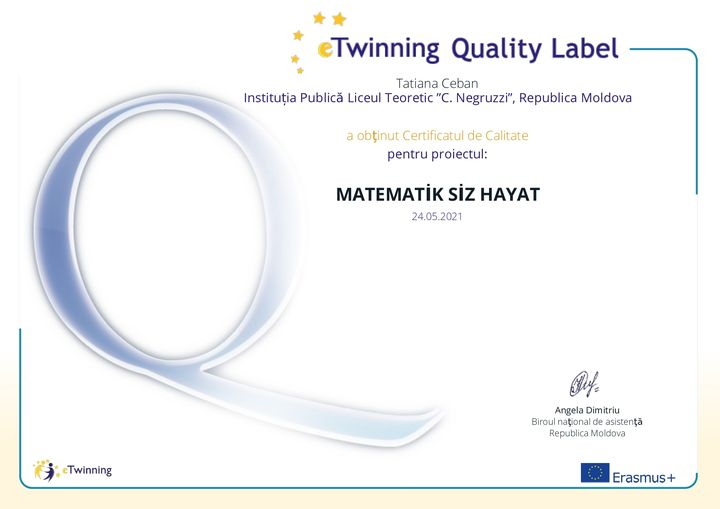
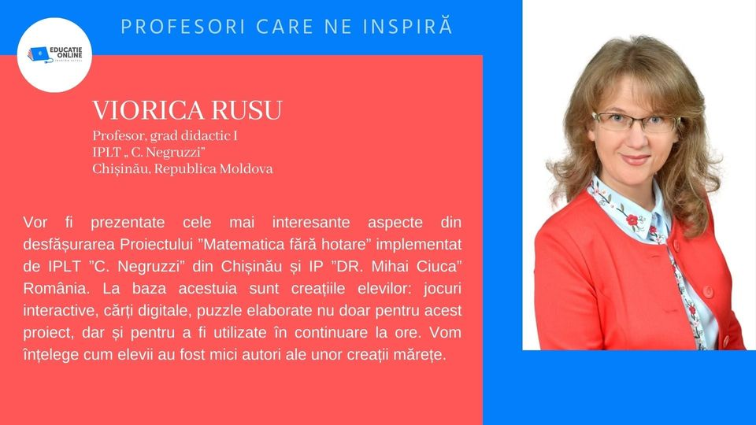
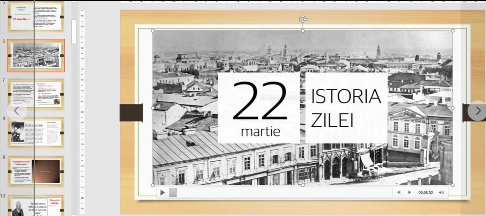
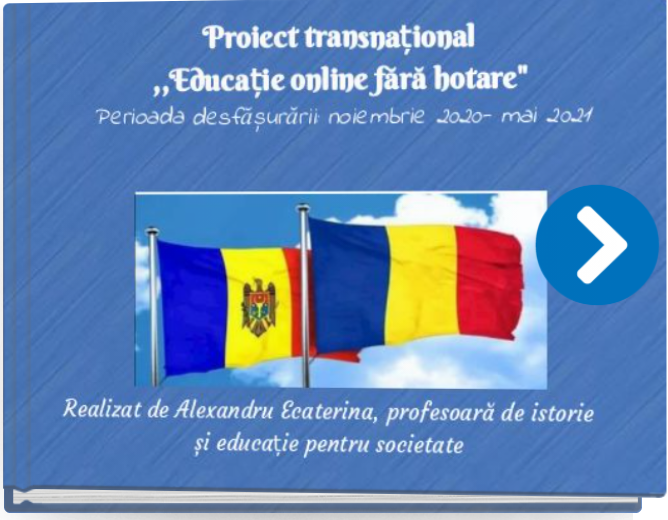

Comisii metodice patronate
Matematică și Științe: Activități desfășurate în a.s. 2020-2021
Concursul Național ”Profesorul - Ambasador Digital”
Pe parcursul activității didactice am fost preocupată de tot ce este nou în Sistemul
Educațional.Întotdeauna am urmărit să utilizez metode creative de
predare-învățare-evaluare
cu implementarea tehnologiilor educaționale și a inovațiilor digitale. Mulțumesc
juriului
Concursului Național „Profesorul-Ambasador Digital” pentru titlul acordat!
T.
Ceban
ETwining Project "The Magic of Matematics"
This project is intended for students and teachers who love mathematics. In our day to day we find mathematics in its most diverse forms, we just need to have our mind available to be able to observe and contemplate it. Math is magic. With this project we want students to appreciate mathematics, live together and work with it using Web -2 tools. We also intend that students from several countries communicate with each other, sharing experiences, mathematical ideas and games with mathematical concepts.
Concursul Republican "Pledoarie pentru Pedagogie"

✅151 de cadre didactice și de conducere au participat în cadrul Concursului Republican
„Pledoarie pentru Pedagogie” desfășurat de Ministerul Educației, Culturii și Cercetării în
scopul sporirii prestigiului profesiei de pedagog, precum și a stimulării creativității
pedagogice și manageriale.
Tatiana Ceban - locul II.
ETwinning Project "MATEMATIK SIZ HAYAT”
When we look at the history of mathematics, it can be said that mathematics, which has an important place in our daily lives, appeared with the first people. With this project, we want to explain the importance of numbers in our lives and introduce the numbers that are so important in our lives, to examine them and enjoy them.We want to try a life without numbers with this project. Let's see what the results will be. What will life be like without numbers? ...
Educație online fără hotare
A fost greu, dar nu imposibil ! Elevii IPLT „C.Negruzzi” din Republica Moldova și IP„Dr Mihai Ciucă” din România, ghidați de profesorii Tatiana Ceban, Viorica Rusu, Lupu Daniela și Gherman Dana au realizat un produs extraordinar în cadrul proiectului transnațional ” Educație online fără hotare ” și au demonstrat că „ Matematica e fără hotare ”
Internet Safety Day, 2021
„Împreună pentru un internet mai bun!” În perioada 08-12 februarie 2021, de Ziua Siguranței pe Internet, în cadrul Proiectului eTwinning-”The Magic of Mathematics”, elevii din IPLT „C. Negruzzi”, au studiat Regulile de securitate pe internet, au creat postere și în colaborare au creat o imagine interactivă
Științe Socio-Umane: Activități desfășurate în a.s. 2020-2021
22 Aprilie – Ziua Pământului
În fiecare an pe data de 22 aprilie celebrăm Ziua Pământului pentru a ne reaminti că planeta Pământ și ecosistemele sale ne oferă condițiile necesare pentru întreținerea vieții. Prin urmare, în cadrul orelor de educație ecologică, au fost organizate discuții și activități cu genericul ”Restaurează-ți Pământul”. Este o tradiție, cu ocazia fiecărei ediții, ca Ziua Planetei Pământ să respecte o temă diferită în fiecare an; tema acestui an este: Restaurează-ți Pământul! Anul aceste Cadrele didactice Babei Angela și Antoci Ecaterina, care predau educatie ecologica au dedicat saptămâna 19-23.04.2021 Zilei Pământului. Au fost oragnizate expozitie de postere digitale discutii cu elevii claselor a 5-7.
Uniți sub un tricolor - 103 ani de la Unirea Basarabiei cu România
Ținând cont de acest eveniment important, tradițional în fiecare an, profesorii de istorie din IPLT ,,C. Negruzzi”, organizează Săptămâna Istoriei, în cadrul căreia sunt organizate diverse activități de cunoaștere a trecutului neamului românesc și a personalităților care ne definesc. În acest an, proiectul educațional Săptămâna Istoriei cu genericul: Țara mea de glorii, vatra mea de dor❤️s-a desfășurat online, în perioada 22 martie – 27 martie 2021, coordonat de profesoara Ecaterina Alexandru împreună cu Iachim Sergiu, Barcaru Liuba și Iachim Olga.Ceea ce ne-a format și ne reprezintă ca neam trebuie să rămână viu în conștiința noastră și a generațiilor care urmează.
Proiect transnațional ”Trecutul de lângă noi oglindit prin patrimoniul cultural local”

Proiectul a avut ca scop valorificarea potențialului educativ al patrimoniului cultural
local în formarea identității naționale, dezvoltând elevilor atitudine pozitivă față de
necesitatea
cunoașterii, conservării și promovării patrimoniului ca element esențial ce ne reprezintă ca
neam.
Profesori implicați : Alexandru Ecaterina, Negura Natalia, Iachim Sergiu, Babei
Angela.